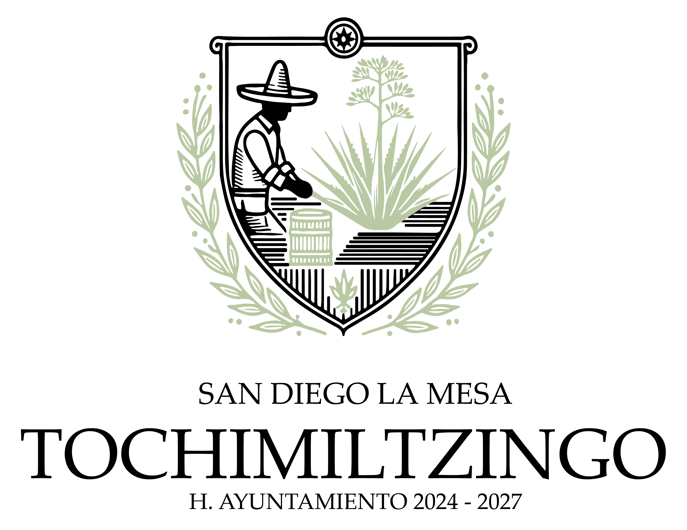
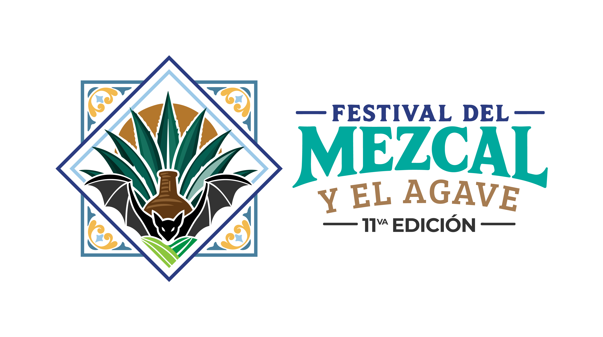

Expositores y Marcas Participantes
Haz clic en cualquier tarjeta para ver la historia y descripción completa

H. Ayuntamiento
San Diego La Mesa Tochimiltzingo
 San Dieguito
San Dieguito
Haz clic en cualquier tarjeta para ver la historia y descripción completa